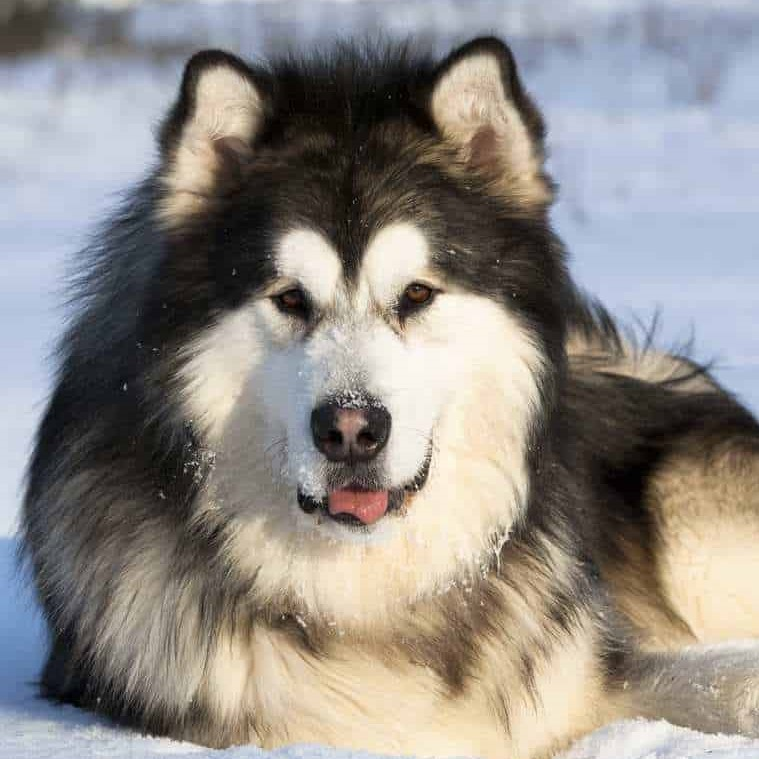

Alaskan Malamute
Alaskan Husky

Since the founding of Summit Farms, we have adopted more than 2,620 dogs and counting.
We are so grateful for the continued support of our donners. We are overjoyed to have so many huskies find their new forever homes with caring families. Should you have any questions, please feel free to visit our contact us page.


Summit Farms is recognized for rescuing Alaskan dog breeds such as Malamutes and Huskies. Our mission is to adopt and save as many dogs as we can.
We believe in helping the helpless and reducing the number of homeless dogs while improving the welfare of all domestic animals. Additionally, we seek to educate our community on the plight of these animals.